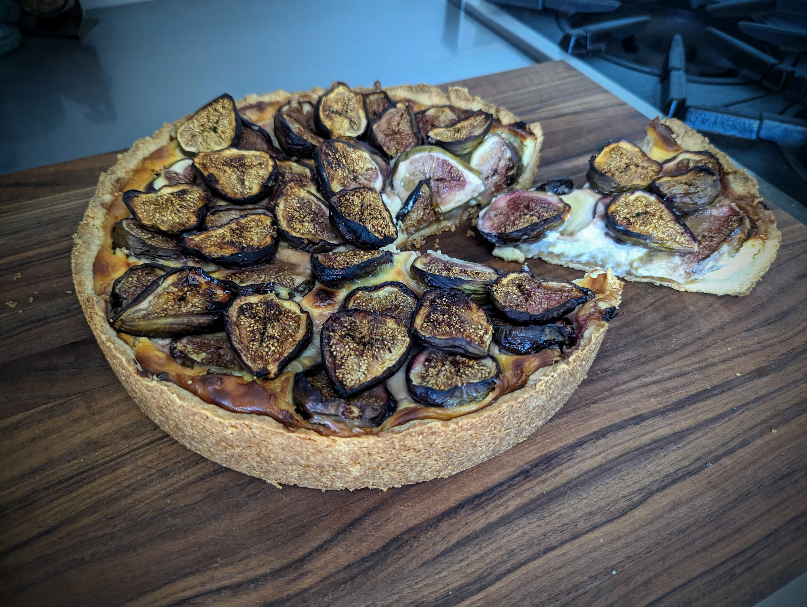

|  | |
| 250g | flour |
| 170g | butter |
| 85g | sugar |
| 1 pinch | salt |
| vanilla extract | |
| ◇ | |
| 250g | marzipan |
| or | |
| 100g | sugar |
| 120g | almonds |
| 20g | amaretto |
| 10g | rose water |
| ◇ | |
| 3 | egg yolks (120g) |
| 100g | sugar |
| vanilla extract | |
| 45g | amaretto |
| 30g | corn starch |
| 300g | milk |
| 30g | butter |
| ◇ | |
| 400g | quark |
| or | |
| 180g | cream cheese |
| 210g | greek yoghurt |
| 15g | lemon juice |
| ◇ | |
| 900g | fresh figs |
| 30g | brown sugar |
Preheat oven to 365°F (185°C).
Cut the chilled butter into ¼" pieces, combine with sugar, flour, salt and vanilla extract. Work until a dough ball forms. Drop into a 10" spring form and press into shape, so that the bottom is evenly covered and there is about a 1" raised rim. Transfer to the refrigerator.
If using store-bought marzipan, cut into thin slices and cover the bottom of the cake. If making from scratch, in a blender process sugar until finely milled, then add remaining ingredients and keep pulsing until a homogeneous paste forms; then spread on dough.
In a small sauce pan, whisk egg yolks, sugar, vanilla extract, amaretto, and corn starch until fully combined. Then add milk and heat on the stove while whisking constantly. When custard thickens, immediately remove from heat and stir in butter.
Stir quark or alternative ingredients into the custard and transfer into the spring form. If using cream cheese, it will be much easier to process if briefly heated up in the microwave or if directly added to the custard at the very end of boiling it.
Cut figs into halves and arrange on top of custard with the cut-side facing up. Sprinkle with brown sugar.
Bake for between 60min and 75min or until custard has firmed up and crust has started browning. Let cool completely before serving.